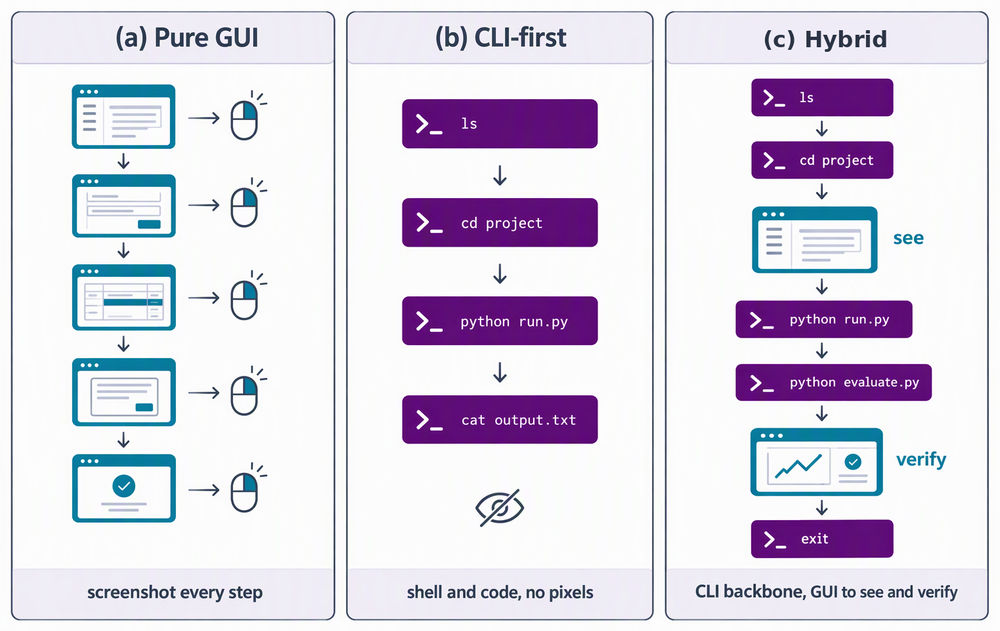

三、课题研究内容
□ 研究一（续）：范式反思 —— 纯 GUI 开销高、纯 CLI 缺少渲染观测，二者互补
评测
GUI
CLI

三种范式：纯 GUI 逐步截图；CLI 优先、不观察像素；混合以 CLI 为主干、GUI 观察与核验（示意图）
正面：CLI 与纯 GUI 成功率相近（OSWorld 受控对照）
成功率（%）
79.1
77.3
GPT-5.5 · 同一判官
受控设置：同一环境、同一模型、同一指令与判官，仅更换工具接口；两组均剔除 8 个需凭据任务。
不观察像素的 CLI 智能体取得相近成功率
[WeaveBench 附录 E]
■ OpenClaw CLI 智能体（不观察像素） ■ 纯视觉 GUI 智能体
反面：纯 CLI 缺少渲染观测 SWE-bench Multimodal 原论文基线最佳约 12%；模态对齐任务上 GUI 59.1% 高于 CLI 48.2% [GUI vs. CLI, 2026]
OpenClaw 的启发（2026 年初） 以 CLI 为主、运行于个人电脑的智能体提供了实现参考 → 以 CLI 为主干、GUI 负责观察与核验的混合能力范式
结论：两类能力互补 → 关键在于任务范式与能力度量：只收录仅用任一通道无法完成的任务，并审计全过程